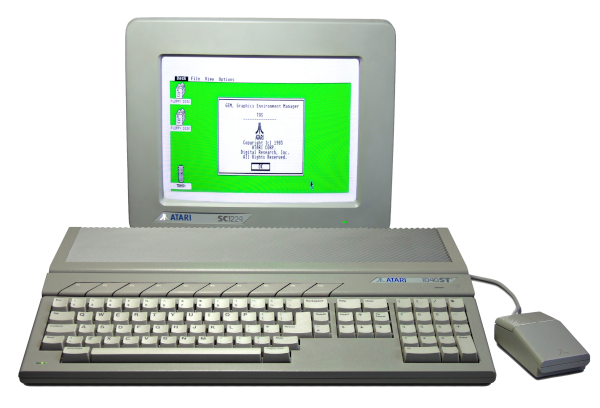

EstyJS 2.0

EstyJS is an emulator for the Atari ST, written in 100% pure JavaScript, originally developed by Darren Coles. Since 2024 and the release of EstyJS 2.0, the project is maintained by Kai Eckert. The source code is available on GitHub. Please use GitHub issues for feedback, bugs and ideas.EstyJS is not a full emulation and focuses on running games or old software for demonstration purposes. See limitations.
Usage
- Click the floppy drives to load a disk image (.st, .msa, .stx and .zip are supported).
- Click the ROM slot to use a different TOS image (.img) instead of EmuTOS.
- Use the middle mouse button to realign the mouse pointer if necessary.
- Joystick 1 is emulated using cursor keys and ctrl (or a real usb joypad). The Joystick button switches this off.
- Keys are identified by position, so the keyboard layout does not matter. The ST keyboard panel shows where a key lands and sends keys a PC keyboard does not have.